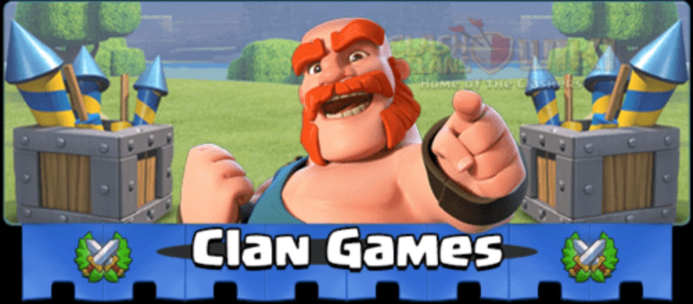

👥 شرایط شرکت
Town Hall 6 یا بالاتر لازم است و Clan Games حداکثر ۵۰ جایگاه شرکتکننده دارد. با شروع یک چالش، جایگاه شرکت تو ثبت میشود.

Clan Games یک رویداد گروهی است که اعضای کلن با انجام چالشها امتیاز جمع میکنند و مجموع امتیازها باعث باز شدن ردههای پاداش برای کلن میشود. برای شرکت، Town Hall 6 یا بالاتر لازم است. با شروع اولین چالش، شرکت در Clan Games همان کلن برای بازیکن ثبت میشود.
وقتی Clan Games شروع شود، Caravan مربوط به رویداد در بازی ظاهر میشود. از آنجا چالشها را میبینی. یک چالش را انتخاب و Start را میزنی؛ سپس با انجام شرط همان چالش امتیاز میگیری. بعضی چالشها در Home Village هستند، بعضی در Builder Base و بعضی ممکن است به Clan War مربوط باشند، پس متن هر چالش را قبل از شروع کامل بخوان.
امتیاز هر بازیکن به مجموع امتیاز کلن اضافه میشود. وقتی مجموع امتیاز به ردههای مشخص برسد، پاداشهای آن رده برای اعضای واجد شرایط باز میشود. برای دریافت پاداش باید حداقل یک چالش را کامل کرده باشی.
Town Hall 6 یا بالاتر لازم است و Clan Games حداکثر ۵۰ جایگاه شرکتکننده دارد. با شروع یک چالش، جایگاه شرکت تو ثبت میشود.
قبل از Start کردن، شرط، حالت بازی و زمان لازم را بررسی کن. چالشی را بردار که واقعاً بتوانی کاملش کنی.
چالشهای کاملشده برایت امتیاز میسازند و این امتیاز همزمان به مجموع امتیاز کلن کمک میکند. برای هر بازیکن یک سقف امتیاز شخصی وجود دارد.
بعد از پایان رویداد، برای هر رده پاداش انتخاب میکنی. اگر امتیاز شخصی را تا سقف برسانی، یک انتخاب اضافه هم داری.
شروع کردن یک چالش بدون خواندن شرط آن، انتخاب چالش نامناسب برای وضعیت فعلی اکانت، فراموش کردن تکمیل حداقل یک چالش و دیر گرفتن پاداشها از اشتباههای رایج هستند. همچنین اگر چند نفر از اعضای کلن بیبرنامه چالش بگیرند، ممکن است ظرفیت ۵۰ نفره شرکت سریع پر شود.
Clan Games یعنی همکاری اعضای کلن برای جمعکردن امتیاز. هر نفر چالش مناسب خودش را انجام میدهد، امتیازها جمع میشوند و ردههای پاداش برای کلن باز میشوند. بهترین رویکرد این است که شرط چالش را دقیق بخوانی، چالش قابلانجام انتخاب کنی و تا پایان رویداد منظم بمانی.
برای بررسی چالش، وارد صفحه اختصاصی DARKINO AI شو. ربات آنجا آماده است تا متن چالش را ازت بگیرد و راهنماییات کند.
🤖 ورود به DARKINO AIبرای ثبت نظر باید پروفایل DARKINO را داشته باشی. اگر پروفایل نداشته باشی، با زدن «ثبت و ذخیره امتیاز» پنجره ساخت پروفایل باز میشود. هر مرورگر/دستگاه فقط یک رأی برای این صفحه ثبت میکند.